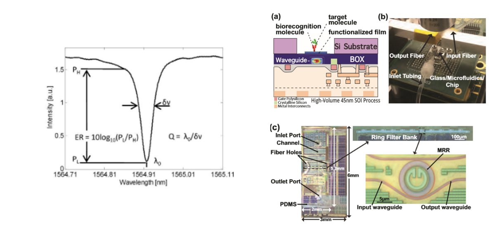

Portfolio
Here are some of the many projects I've worked on in the past few years.
QubeSat
Fall 2019 - PresentAs a member of Space Technologies at Cal, I've worked on the QubeSat mission for 3 semesters, primarily focused on the mechanical design, circuitry layout, and optics. Our mission is to design the first quantum gyroscope fit for space and deploy and test it on a CubeSat through NASA's CubeSat Launch Initiative. This revolutionary technology gives better precision and accuracy in comparison to traditional MEMS gyroscopes, thus making it a better fit for deep space missions. NASA has given our project a go-ahead for launch in Fall 2021. Click here to check out the website!

Biotechnology Stealth Startup
Summer 2020I worked at a stealth biotech startup on high precision optical instruments over the course of freshman year summer. I developed calibration and quality control scripts in Python, Matlab, and ACS that synchronously moved and took data from motors, lasers, and sensors and used data analysis techniques to display results in a human-readable format. I also modeled, prototyped, and installed motor mounts and other parts using SolidWorks.

NV-NMR
Spring 2020As a research assistant at the Lawrence Berkeley National Laborator, I developed scripts to automate the data collection and data analysis process for nitrogen-vacancy nuclear magnetic resonance experiments. This involved controlling a laser and reading sensor data from spectrophotometers, photodiodes, and single photon detectors. I also converted Matlab scripts into Python to simplify file to file interfaces and increase readability.

Mood for Zoom
Spring 2020During quarantine, my friends and I noticed that professors had trouble engaging with students. Thus, for LA Hacks, we built Mood for Zoom, a real-time aggregate mood visualization tool to help professors, educators, and meeting leaders "read the room" over Zoom. The project uses the Google Cloud Vision API to read emotions, PyAutoGUI to continuously take screenshots to input into the API, and TkInter to show the visualization. We were awarded 2nd Place Overall and an honorable mention for Hack Using Machine Learning. Click here to check out the Devpost!

Senate Watch
Spring 2020The average American knows very little about their representatives and whether their own views are being properly represented. Senate Watch is a tool that scrapes the official senate.gov website and displays their pattern of voting based on party loyalty. To accomplish this, we used beautiful-soup and requests for scraping, Python for data processing, and jquery/javascript for frontend. Click here to check out the Devpost!

Biosensing Laser
Fall 2019I worked with grad students in the Berkeley Wireless Research Center to develop a novel cancer detection tool using an electronic-photonic platform in a CMOS-SOI process. I wrote software to control the laser and write out data, automating a multi-hour process of testing.
Crawler Robot
Summer 2018At COSMOS in UCSD, I worked on designing a "walking" robot from scratch. After settling on an insectiod design, my partner and I worked on designing the circuitry, writing code on a Raspberry Pi and Adafruit PWM driver, and modelled/3D printed the chassis. In a time-based race, our robot easily beat the other competitors by a margin on 50%.